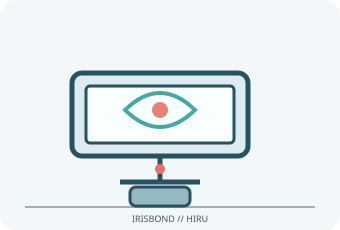

[ ADAPTIVE AND SWITCH-ACCESS CONTROLS // IDENTIFIED COMPONENT ]
IRISBOND Hiru
USB eye tracker for hands-free cursor control on supported Windows computers and specified USB-C iPad Pro configurations.

MODEL IDENTIFICATION: Hiru eye tracker (model; check label/firmware and kit revision). Confirm the exact label, regional suffix, revision, receiver/accessories, software and bundle before service or compatibility claims.
Model specifications
| Catalog subcategory | Adaptive and switch-access controls |
|---|---|
| Exact device / model / SKU | Hiru eye tracker (model; check label/firmware and kit revision) |
| Device and control operation | Infrared eye-gaze tracker connects by USB-C/USB cable to host; uses the manufacturer app/access software and calibration to map gaze. Selection/dwell behavior is configured in supported host software; not a physical switch. |
| Host interface | Infrared eye-gaze tracker connects by USB-C/USB cable to host. |
| Switch/control inputs | Infrared eye-gaze tracker connects by USB-C/USB cable to host; uses the manufacturer app/access software and calibration to map gaze. Selection/dwell behavior is configured in supported host software; not a physical switch. |
| Mounting and adjustability | Mount on the supplied monitor/tablet holder using the included attachment hardware; position centered below the display at the manual’s working distance and calibrate after changes to seat, screen or lighting. |
| OS / host compatibility | Manufacturer documentation describes Windows and selected iPadOS devices; iPad compatibility is limited to specified USB-C iPad Pro generations and OS/app requirements. Not universal iPad or Android compatibility; check current Hiru compatibility/manual before use. |
| Accessibility considerations | Eye-gaze control provides hands-free pointer access; calibration, dwell duration and supported software should be individualized. Account for glasses, light, posture, fatigue and a user-controlled recovery/stop method. |
Accessibility and safety notes
Eye-gaze control provides hands-free pointer access; calibration, dwell duration and supported software should be individualized. Account for glasses, light, posture, fatigue and a user-controlled recovery/stop method.
Use the correct holder/cables, secure tracker before moving the display, and avoid excessive bright light or prolonged uncomfortable posture. Keep cables clear of mobility equipment; eye tracking should not be relied upon for safety-critical controls.
Document observed condition separately from manufacturer specifications. Test activation and host response in a controlled, non-safety-critical setup; record accessories, host OS, driver/app and firmware versions.
Manufacturer and support sources
- IRISBOND manuals and setup guidesManufacturer/support reference for model identification and setup. Confirm applicable region, hardware revision and bundle.
- IRISBOND Hiru user manualManufacturer/support reference for model identification and setup. Confirm applicable region, hardware revision and bundle.
Support pages and compatibility lists can change. Retain the manual revision used for a physical-device assessment.